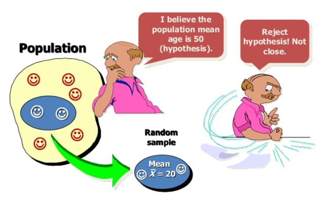
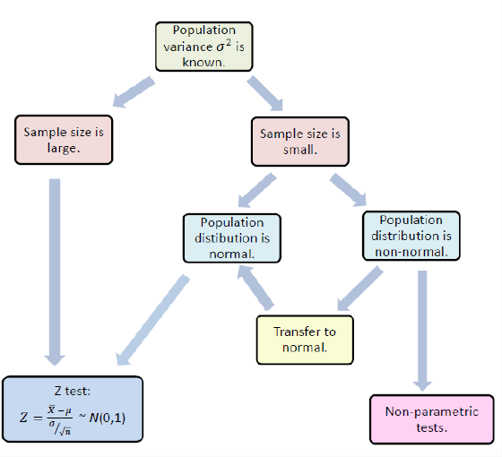
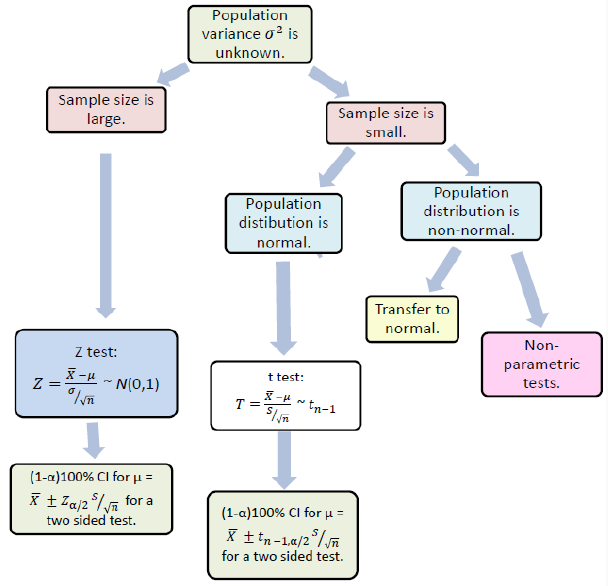

DSC 3091- Advanced Statistics Applications I
Hypothesis Testing
Dr Jagath Senarathne
Department of Statistics and Computer Science
Hypothesis Testing
Statistical hypothesis is an assumption or a statement
which may or may not be true concerning one or more populations.

The purpose of hypothesis testing is to choose between two conflicting hypotheses about the value of a population parameter.
A hypothesis test involves two hypothesis:
Null hypothesis (H0) : a statement to be tested (the case of “no effect” or “no change”).
The alternative hypothesis (HA): a statement that is an alternative to the null hypothesis.
The hypothesis test is aimed to test if the null hypothesis should be rejected in favor of the alternative hypothesis.
The criterion for deciding whether to reject the null hypothesis involves a so-called test statistic.
One Sample Test for Mean: when population variance is known.
Z-test
Hypothesis:
\(H_{0}:\;\mu=\mu_{0}\;{\text{vs.}\;}H_{1}:\:\mu\neq\mu_{0}\) or
\(H_{0}:\;\mu\leq\mu_{0}\;{\text{vs.}\;}H_{1}:\:\mu>\mu_{0}\) or
\(H_{0}:\;\mu\geq\mu_{0}\;{\text{vs.}\;}H_{1}:\:\mu<\mu_{0}\)
Test statistic:
\(Z=\frac{\overline{X}-\mu}{\sigma/\sqrt{n}}\sim N(0,\,1)\)
Example
A factory makes tins of soy beans. The desired average weight of a tin is 160g and the weights follows a normal distribution with variance of 15g. Using a sample of 20 cans, let’s statistically test whether the population weight of the tins meets the expectations.
One Sample Test for mean: when population variance is unknown
Example
A factory makes tins of soy beans. The desired average weight of a tin is 160g and the weights follows a normal distribution. Using a sample of 20 cans, let’s statistically test whether the population weight of the tins meets the expectations.
Note that according to the test we could use “two.sided”, “less” and “greater” for the alternative argument.
One Sample Proportion Test
\(p=\frac{\# \; of \; success}{\# \; of \; trials}\)
Hypothesis:
\(H_{0}:\;p=p_{0}\;{\text{vs.}\;}H_{1}:\:p\neq p_{0}\) or
\(H_{0}:\;p\leq p_{0}\;{\text{vs.}\;}H_{1}:\:p>p_{0}\) or \(H_{0}:\;p\geq p_{0}\;{\text{vs.}\;}H_{1}:\:p<p_{0}\)
Case I: Large sample
Test statistic:
\(Z=\frac{\hat{p}-p_0}{\sqrt{p_0(1-p_0)/n}}\sim N(0,\,1)\)
Check the assumptions for Proportion Test
A simple random sample of size n is taken.
The conditions for the binomial distribution are satisfied.
To determine the sampling distribution of \(\hat{p}\), we need to show that \(np \geq 5\) and \(nq \geq 5\),
where \(q=1-p\). If this requirement is true, then the sampling distribution of \(\hat{p}\) is well approximated by a normal curve.
Example
The following variable shows the hair colour of 3000 people. Using a sample of 1000 people we are going to check whether the proportion of black hair is equal to 0.5.
Case II: Small Samples
- In that case, the function binom.test() can be used for an exact calculation based on the binomial distribution
Example: In the previous example, suppose we take a sample of 10.
Hypothesis Testing for Variance : One Sample
Let \(X\) be a random variable with variance \(\sigma^2\) and sample of size \(n\)
The hypotheses of the test are,
Under \(H_0\), Test statistic is,
This test is valid only for normally distributed data.
Example:
Let’s recall the example of manufacturing cans of soy beans and check whether the variance of the population is 10.
Two sample test for Means
Case I: equal Variances
The hypotheses of the test are,
Under \(H_0\), Test statistic is,
Example
Body fat percentages of 13 males and 10 females are given in the following variables. We need to check whether body fat percentage of males differs from that of females. Note that the body fat percentages follows a normal distribution.
To check whether the variances are equal, we should use a two sample variance test first, but for this example, let’s suppose variances are equal.
Case II: Unequal Variances
- Test statistic:
\({T= \frac{\overline{x}_1-\overline{x}_2}{\sqrt{\frac{s^2_1}{n_1}+\frac{s^{2}_2}{n_2}}}}\sim t(a)\)
where
\(a=\frac{\Big({\frac{s^2_1}{n_1}+\frac{s^{2}_2}{n_2}}\Big)^2}{\frac{({s^2_1}/{n_1})^2}{n_1-1}+\frac{({s^2_2}/{n_2})}{n_2-1}}\)
- This test is valid for normally distributed variables \(X_1\) and \(X_2\) with unequal variance.
Example
Let’s recall the previous body fat percentage example and let’s assume that the variances are not equal.
Hypothesis Testing for Mean : Paired Samples
The hypotheses of the test are,
Under \(H_0\), Test statistic is,
This test is valid only for normally distributed data or large samples (n > 30).
Example
Soil samples that were taken from 15 locations were divided in half and sent to two laboratories to test. The measurements that were observed are given in the following variables.
We want to check whether the two laboratories give the same result.
Hypothesis Testing for Proportion : Two Samples
The hypotheses of the test are,
Under \(H_0\), Test statistic is,
To use this test, the sample must be large enough.
Hypothesis Testing for Variance : Two Samples
The hypotheses of the test are,
Under \(H_0\), Test statistic is,
This test is valid only for normally distributed samples.
Example
Recall the body fat percentage example of male and female. Previously we assumed that the variances are not equal. We can actually check whether the variances are equal or not.
Check the Normality assumption
- Shapiro-Wilk test
- Anderson-Darling test
- Kolmogorov-Smirnov test
Non- Parametric Tests
Non-parametric tests are distribution free.
The only assumption holds for these tests is that the data should be an independent random sample.
Examples:
Tests on position- Sign test and Wilcoxon sign rank test
Sign Test
Case I: One sample
In this test we wish to compare the true median of a sample with a theoretical value.
Test statistic:
Two sided test : \(\max(k^+,k^-)\), right sided test: \(k^+\) and left sided test: \(k^-\),
where \(k^+\) is the number of values strictly greater than \(\eta_0\) and \(k^-\) is the number of values strictly lower than \(\eta_0\).
Example
The median price of one-bedroom flats in New York in 2008 was 130,000 dollars. We are given a sample of 32 flats (in 1000 dollars) in 2009 and we need to check whether the prices are rising than in 2008.
m0 <- 130 # median in 2008
prices <- c(230.00,148.00,126.00,134.62,155.00,157.70,
160.00,225.00,125.00,109.00,157.00,115.00,
125.00,225.00,118.00,179.00,176.00,125.00,
123.00,180.00,151.00,120.00,143.00,170.00,
190.00,233.00,148.72,189.00,121.00,149.00,
225.00,240.00)
library(BSDA)
SIGN.test(prices,md = m0, alternative="greater")Case II: Sign Test for Two Paired Samples
In this test we wish to compare the true median of two Paired samples
Test statistic:
Two sided test : \(\max(k^+,k^-)\), right sided test: \(k^+\) and left sided test: \(k^-\),
where \(k^+\) is the number of values strictly greater than \(\eta_1-\eta_2\) and \(k^-\) is the number of values strictly lower than \(\eta_1-\eta_2\).
Example
Soil samples that were taken from 15 locations were divided in half and sent to two laboratories to test. The measurements that were observed are given in the following variables. Note that no assumptions are made.
Wilcoxon Sign Rank Test
Case I: One Sample Sign Rank Test
This is an alternative test for sign test which uses not only the sign but also the rank difference into account.
Test statistic:
Two sided test : \(\min(\tau^+,\tau^-)\), right sided test: \(\tau^+\) and left sided test: \(\tau^-\),
where \(\tau^+\) and \(\tau^-\) are the sum of ranks of positive and negative differences from \(\eta_0\).
Example
Let’s apply the Wilcoxon sign rank test for the same flat prices example considered in sign test.
m0 <- 130 # median in 2008
prices <- c(230.00,148.00,126.00,134.62,155.00,157.70,
160.00,225.00,125.00,109.00,157.00,115.00,
125.00,225.00,118.00,179.00,176.00,125.00,
123.00,180.00,151.00,120.00,143.00,170.00,
190.00,233.00,148.72,189.00,121.00,149.00,
225.00,240.00)
wilcox.test(prices,m0, exact = FALSE, alternative = "greater")Case II: Sign Rank Test for Two Paired Samples
The hypotheses for this test are;

Test statistic:
Two sided test : \(\min(\tau^+,\tau^-)\), right sided test: \(\tau^+\) and left sided test: \(\tau^-\),

where \(\tau^+\) and \(\tau^-\) are the sum of ranks of positive and negative differences from \(\eta_1-\eta_2\).
Example
Recall the soil sample example we used for paired sign test and let’s use Wilcoxon sign rank test for paired samples to compare the medians.
Case III: Sign Rank Test for Two independent Samples
Example:
Body fat percentages of 10 males and females are given in the following variables. We need to check whether median body fat percentage of males differs from that of females.